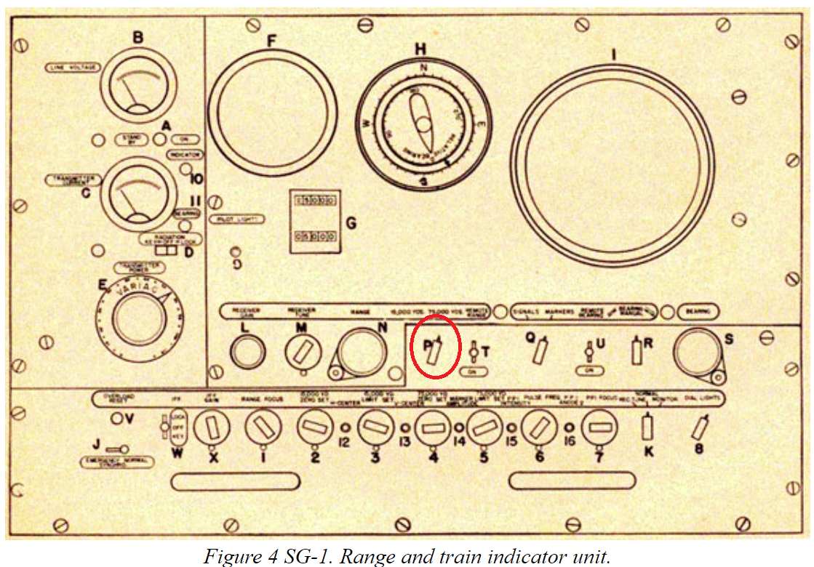
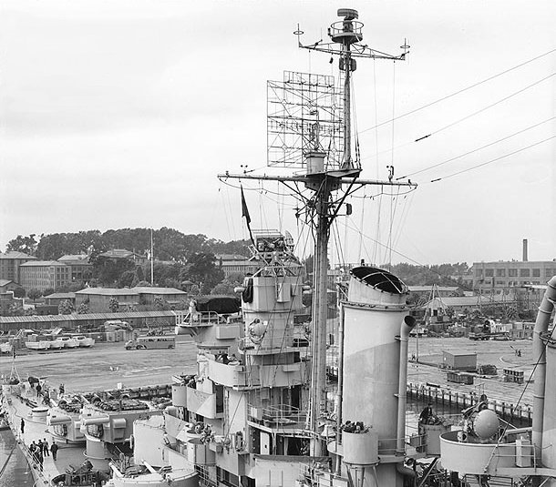
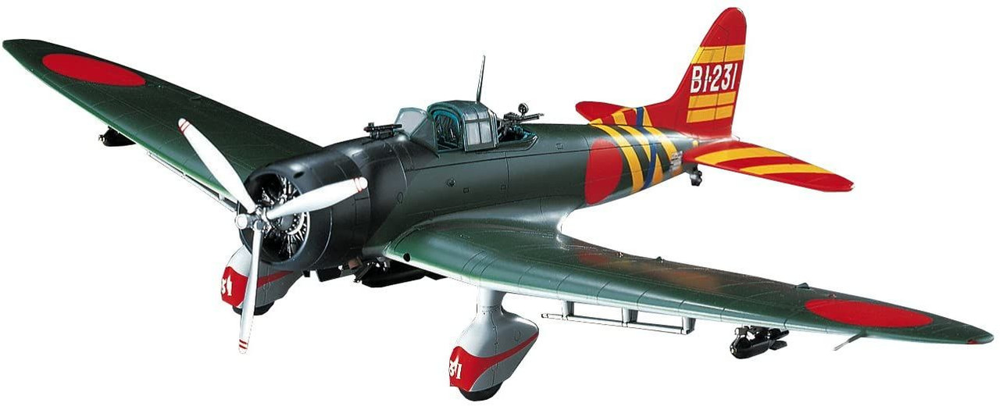
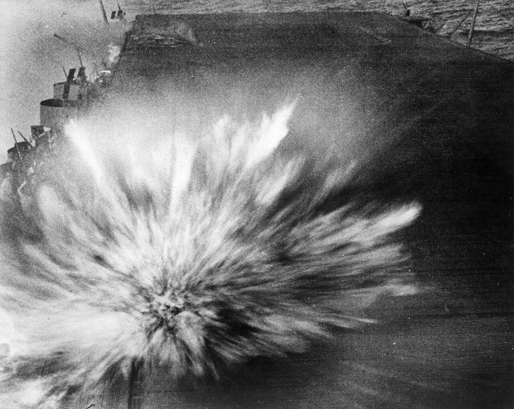

과달카날에서의 레이더 (7) - 이게 모두 레이더 탓이다
게시: 2024-03-21T06:30:24+09:00
<이게 다 망할 놈의 레이더 탓이다> 치쿠마의 정찰기를 격추한지 얼마 안된 오후 4시 2분, 엔터프라이즈와 사라토가의 레이더들은 동시에 상당히 커다란 표적을 포착. 방향은 320도, 즉 북서쪽이고 거리는 140km. 당장 난리가 난 두 항모에서는 손님 맞을 채비에 분주. 일단 두 항모가 가진 와일드캣 전투기들을 모조리 발진시켜 총 53대를 상공에 띄움. 이건 역대급으로 많은 CAP(Combat Air Patrol) 숫자. 그 순간은 몰랐지만 나중에 알고보니 쇼가꾸와 즈이가꾸에서 출동한 일본 편대는 총 42대로서, 30대는 발(Val, Aichi D3A) 급강하 폭격기였고 12대가 제로센 전투기들. 단순 계산으로 53대 vs. 42대로 수적 우위가 있는데다, 아직 적 편대가 매우 멀리 있는 상태에서 이 정도의 전투기를 띄웠다면 적편대는 다 격추시켜버릴 수 있었음. 그러나 언제나 그렇지만 한 두가지가 아니고 무려 3가지 문제들이 차례로 발생함. 다 레이더 문제. 1) trip button 문제 일단 320도 방향에서 나타난 적기들이 조금 있다가 사라져 버림. 처음엔 적편대가 소멸지대 (fade zone, https://nasica1.tistory.com/726 참조)에 들어간 것인가 생각하고 조금 기다리면 다시 나타나겠거니 하며 그냥 기다렸으나, 이들이 다시 레이더의 A-scope에 포착된 것은 무려 70km까지 근접한 위치. 이건 하나의 A-scope에서 0~50마일(80km), 50마일~100마일(160km), 100마일~150마일(240km)의 3개 화면을 똑딱이 스위치(trip button)로 변경해가며 스캔하는 방식에서 비롯된 기술적 문제. 아무튼 이로 인해 저 먼 100km 밖부터 전투기로 요격하는 것이 불가능했음.

(이건 대공용 CXAM radar가 아니라 대수상 탐색용 SG radar의 매뉴얼에서 오려낸 그림인데, 가운데 아래 빨간 색 원이 쳐진 똑딱이 스위치가 trip button. 저걸 어느 위치로 똑딱하느냐에 따라 레이더의 A-scope의 표시 범위가 0~13km (1만5천 야드)와 13km ~ 69km (7만5천 야드)의 두 가지로 세팅되었음.)

(사진은 경순양함 USS Astoria (CL-90, 1만4천톤, 32노트)의 1944년 10월 모습. 마스트 맨 꼭대기에 달린 갈퀴 모양의 물건이 SG 레이더 안테나.)
2) IFF (If Friendly of Foe) 문제 적기가 레이더에서 사라져 우왕좌왕하는 판국에, 이번에는 315도 방향에서 좀 더 작은 편대가 또 포착됨. 이건 혹시 적 항모의 위치를 찾아오라고 여기저기 잔뜩 내보냈던 아군 돈틀리스 중 일부가 돌아오는 것 아닌가 싶었으나 아무튼 눈에 보이는 bogey(미확인 항공기)를 무시할 수는 없는 일. 하물며 적의 대형 편대가 레이더상에서 사라진 상황에서는 더욱 무시할 수가 없었음. 그래서 결국 부족한 와일드캣 전투기들 중에서 무려 10대나 할당하여 보냄. 그런데 가보니... 아군 돈틀리스 급강하 폭격기가 맞았음. 무슨 이유에선지 IFF를 꺼놨거나, 켰는데 작동을 제대로 안 한 것. 이 IFF 문제 때문에 소중한 전투기 10대가 요격전에 참여할 수가 없었음. 3) 고질적인 고도 문제. CXAM 레이더로는 적기의 고도를 파악하는 것은 '소멸지대' 현상을 보고 추정하는 것에 불과. 그러다보니 매우 부정확. 엔터프라이즈의 레이더 관제사는 적편대의 고도가 3.6km라고 추정. 그러나 사라토가의 관제사는 5.4km (1만8천 피트)라고 추정하고 그걸 무전으로 엔터프라이즈에게 통보. 일이 꼬이느라고 하필 이때 열대의 대기 상태가 좋지 않아 무전 품질이 매우 치직거렸음. 그러다보니 엔터프라이즈에서는 사라토가의 1만8천 피트라는 소리를 그냥 8천 피트(2.4km)라고 알아들었음. 자신의 고도 측정만으로는 긴가민가 했지만 사라토가에서도 2.4km라고 측정했다는 소식을 듣자 엔터프라이즈의 관제사는 적기의 정확한 고도는 잘 모르지만 아무튼 확실히 3.6km 이하일 것이라고 확신. 그래서 와일드캣 전투기들 중 30대를 원거리 요격차 출동시키면서 2.4km ~ 3.6km 사이에 층층이 쌓아서 내보냈음.

(접히지 않는 고정식 랜딩기어를 가진 Aichi D3A "Val" 급강하 폭격기. 최대 속도는 430 km/h로서, 와일드캣의 533 km/h보다는 느렸지만 일본해군 주력 뇌격기 "Kate"의 378 km/h보다는 훨씬 빨랐음. 하지만 꼭 빠르다고 다 좋은 것은 아니라서, 당시 미해군의 돈틀리스 급강하 폭격기는 410 km/h로서 역시 느렸고 그래서 475 km/h로 훨씬 빠른 Curtiss SB2C Helldiver가 개발되었지만, 대부분의 조종사들은 돈틀리스를 더 선호. 이유는 착함할 때 저속에서의 안정성이 매우 좋았기 때문.)

그런데 약 50km 지점에서 일본 편대를 직접 마주친 와일드캣들이 보니, 적기는 거의 5km 상공으로 접근하고 있었음. 와일드캣은 상승 속도가 빠른 전투기가 절대 아니었음. 힘겹게 그 고도까지 올라가느라 낑낑대는 동안 일본 편대에서는 제로센들이 바람처럼 내리꽂으며 와일드캣들을 덮침. 와일드캣들은 최선을 다했으나 결국 실제로 발 폭격기들에게 총질을 할 수 있었던 와일드캣은 30대 중에서 불과 7대. 결국 24대의 급강하 폭격기들이 와일드캣들을 뚫고 항모전단 상공에 거침없이 돌입. <Damage control의 1등 공신, 레이더> 이렇게 부정확한 레이더 탓에 방공망에 구멍이 숭숭 뚫렸지만 그래도 미리미리 공습을 예보해준 것만으로도 레이더는 큰 역할을 함. 일단 미리 와일드캣 전투기들을 다 발진시켜 적기를 요격하기도 했지만, 이어서 남아있는 모든 폭격기 및 뇌격기들에게 폭탄과 어뢰를 싣고 모조리 북쪽으로 날려보내면서 '일단 무조건 피해라 - 혹시 그쪽에서 뭐든 발견하면 공격하시든가'라고 지시. 항모가 피격될 때 큰 피해가 발생하는 이유는 격납고의 연료를 채운 항공기들에게 유폭이 발생하기 때문이므로, 항공기들을 싹 다 날려보내면 폭탄을 맞더라도 피해가 확 줄기 때문. 이어서 잔여 항공유나 폭탄, 어뢰 등을 모조리 안전한 곳으로 치워버림. 이렇게 날아간 폭격기 뇌격기들은 아무 것도 찾지 못했으나 결국 공습이 끝난 이후 항모들 및 헨더슨 비행장에 무사히 착륙. 한편, 고도 측정 실패로 효과가 반감되기는 했지만 와일드캣의 요격을 뚫고 들어온 24대의 일본 급강하 폭격기들도 마음이 급하기는 마찬가지. 일본 편대가 날아온 방향에서 볼 때 엔터프라이즈가 좀 더 가까왔고 사라토가는 좀 더 멀었는데, 훈련받은 대로 하자면 반반씩 두 항모를 덮쳤어야 했으나, 이들은 모두 가까운 엔터프라이즈로 돌격. 투하된 폭탄 몇 발이야 맹렬한 대공포 화망과 회피 기동으로 피할 수 있을 거라 기대했지만, 무려 24발을 모조리 피할 수 있을까? 결국 3발의 폭탄이 엔터프라이즈에 명중. 불행 중 다행으로 3발 중 처음 얻어맞은 1발만 지연 신관이 달린 semi-철갑탄 (일본해군 용어로 일반폭탄)이라서 3층의 갑판을 뚫고 들어가 폭발했고, 나머지 2발은 일반 고폭탄 (일본해군 용어로 지상탄)으로서 갑판에 명중하는 순간 즉각 폭발하여 피해는 치명적이지는 않았음. 이 3발 중 2발이 엔터프라이즈 갑판에 떨어지는 장면은 드물게도 생생하게 동영상으로 촬영되어 지금도 아래 유튭에서 볼 수 있음. https://youtu.be/a6PvVP3AsqQ?si=T4XuWRrcS6xwp_8M

(엔터프라이즈에 그 3번째 폭탄이 명중하는 장면. 이 유튭 비디오는 볼 만함. 이거 찍은 카메라맨은 살았다고.)
3번째 폭탄은 엘리베이터 언저리에 맞는 바람에 엘리베이터를 못 쓰게 만들어버렸지만 큰 인명 피해를 내지 않았지만 2번째 폭탄은 하필 좌현의 대공포좌에 명중하여 꽤 큰 피해가 발생시킴. 폭탄 자체의 파괴력도 있었지만 그 대공포좌에 있던 대공포탄들이 유폭을 일으키며 심각한 화재를 발생시킨 탓. (분량 조절 실패로 다음 주에 계속)